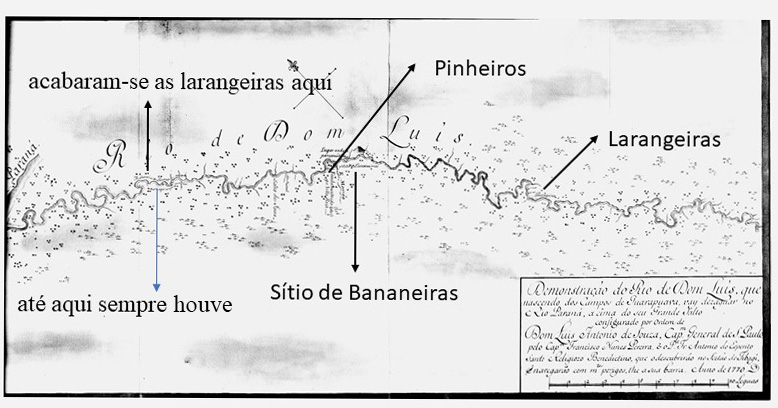
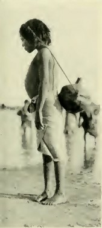

Pouco se sabe sobre a participação das mulheres indígenas na formação do território e no mapeamento do Brasil. Temos apenas raros relatos descrevendo suas atividades no cotidiano das aldeias e menções às que se casaram com portugueses, como a índia tupinambá Catarina Paraguaçu, que desposou o náufrago Diogo Álvares Correia, o Caramuru, e com ele iniciou a construção da cidade de Salvador, na Bahia. No entanto, novos estudos começam a mostrar as inconsistências da historiografia oficial a esse respeito.
Ainda que a presença das mulheres indígenas tenha sido minimizada e relegada ao esquecimento por muito tempo, elas tiveram participação essencial para o funcionamento e o sucesso das expedições exploratórias no século 18″, afirma a historiadora e pesquisadora Denise Moura, professora livre-docente do departamento de História da UNESP, no campus de Franca (SP). “As mulheres indígenas foram um componente ativo e influente na geografia e na territorialidade, além de atuarem como intermediadoras entre as comunidades tradicionais e os colonizadores”, diz. A historiadora é autora de um estudo recente que joga luz sobre a influência das mulheres indígenas no registro e na transmissão dos conhecimentos geográficos na cartografia desse período. Seu primeiro artigo sobre o tema foi publicado no final de 2022 na plataforma Journal OpenEdition, sob o título Aos olhos da mulher indígena: cartografia, espacialidade e gênero em expedições de mapeamento no Brasil meridional (século XVIII). Em junho deste ano, a pesquisadora foi à Alemanha apresentar suas descobertas e novos dados no simpósio Intersections in Map History (ISHMap), promovido pela Sociedade Internacional da História do Mapa com a colaboração do renomado Max Planck Institute for the History of Science.
Os primeiros indícios quanto ao papel desempenhado por essas mulheres indígenas a chamarem a atenção da pesquisadora apareceram em 2015. A historiadora buscava informações sobre procedimentos para o mapeamento do Sul do Brasil no século 18 para embasar sua tese de livre-docência, defendida em outubro do ano passado. “Foi por acaso. Eu pesquisava documentos das expedições exploratórias na região onde hoje é o Estado do Paraná e que era chamada de Sertão do Rio Tibagi”, diz. Na época, o novo enviado de Portugal para governar a Capitania de São Paulo, Dom Luís António de Sousa Botelho Mourão, recebeu da Coroa Portuguesa ordens para proceder, com urgência, ao mapeamento do território, pois a Coroa pressentia que os espanhóis estavam interessados naquelas terras. “Nas ordens e instruções de Dom Luís sobre os preparativos para a montagem de uma das onze expedições que organizou ao Sertão do Tibagi, cada uma delas com cerca de oitenta soldados, encontrei um documento falando de uma mulher indígena que deveria servir como guia. O governador dava todas as orientações sobre como vesti-la e a posição que deveria ocupar, à frente da expedição”, diz.
Uma nova metodologia
Quando estava já com a tese escrita e prestes a ser defendida, após analisar centenas de documentos e mapas, a professora recordou-se da menção à mulher. “Fiquei pensando no que teria acontecido a ela, que nunca mais foi mencionada em tudo que li. Por que nunca mais apareceu? Caiu num buraco? Eu desconfiei que ela fosse capaz de se comunicar com povos não falantes do tupi-guarani, os quais o governador Dom Luis sabia que habitavam a região a ser mapeada.”
Quando estava já com a tese escrita e prestes a ser defendida, após analisar centenas de documentos e mapas, a professora recordou-se da menção à mulher. “Fiquei pensando no que teria acontecido a ela, que nunca mais foi mencionada em tudo que li. Por que nunca mais apareceu? Caiu num buraco? Eu desconfiei que ela fosse capaz de se comunicar com povos não falantes do tupi-guarani, os quais o governador Dom Luis sabia que habitavam a região a ser mapeada.”
Posteriormente, após o contato entre soldados e indígenas, estes foram identificados como Xuclan e Xokleng. Esta etnia ainda existe, autodenomina-se Laklaño e pertence ao tronco linguístico Jê. No passado, os Laklaño habitaram grandes extensões de terra entre os estados de Santa Catarina, Paraná e Rio Grande do Sul até serem drasticamente reduzidos por epidemias de gripe e sarampo e perseguições. Intrigada com o destino da indígena apagada dos registros históricos, a pesquisadora voltou aos documentos e resolveu interpretá-los, buscando referências também na literatura antropológica e etnográfica
“Entendi que seria necessário desenvolver novos métodos para conseguir extrair informações sobre a espacialidade da mulher indígena das muitas camadas da narrativa elaborada pelos soldados (alguns inclusive missionários beneditinos), que foram capazes de apagar a presença dela nos empreendimentos de mapeamento”, diz a pesquisadora. O caminho imaginado pela pesquisadora, e que deu certo, foi associar recursos da etnografia e do conceito de ciência colaborativa que vem desenvolvendo, a partir de uma perspectiva de gênero, para identificar a contribuição dessas mulheres à cartografia do século 18. “O registro etnográfico, escrito ou visual, embora seja conformado por seleções específicas dos etnógrafos de uma certa época, e também deva ser submetido à crítica, é valioso porque documenta, de forma detalhada e sistemática, as características culturais, sociais e comportamentais de um grupo étnico ou comunidade”, define Denise.
Ciência colaborativa
A ciência colaborativa é uma abordagem que envolve a participação de comunidades locais, grupos de interesse e indivíduos de fora do mundo acadêmico, cujas contribuições podem variar desde a coleta de dados em ambientes naturais à formulação de perguntas de pesquisa. A partir dessas premissas, a pesquisadora, que teve auxílio dos seus orientandos em projetos PIBIC na leitura dos diários e mapas, pediu ao grupo que não se preocupasse em procurar menções explicitas às mulheres indígenas. Deveriam prestar atenção aos nomes de frutos, sinais de florestas, árvores, plantações, árvores, rios, montanhas e às descrições das atividades das mulheres no ecossistema local.
O levantamento conduzido com a nova metodologia mostrou, por exemplo, que as mulheres Laklanõ (ou Xokleng) eram responsáveis pela colheita e coleta de frutos, sementes e castanhas, especialmente de pinhões, um alimento importante na dieta dos povos dessa região. Aos homens cabia a caça. Na continuidade de sua pesquisa com mulheres indígenas da região do Gran Chaco, nas margens do rio Paraguai, a historiadora descobriu que também era tarefa das mulheres tecer as bolsas com alças muito longas e largas, capazes de serem sustentadas sobre o topo da cabeça, que eram empregadas no transporte e armazenamento dos alimentos. Nas expedições do colonizador, essas sacolas, comuns a outras etnias, eram levadas e reabastecidas pelas indígenas nos locais de cultivo e armazenamento conhecidos anteriormente por elas durante o percurso pelo território.
Bolsa tecida por mulheres indígenas com longas alças colocadas no topo da cabeça, o tumpline (nome em inglês) era usado para transportar os gêneros necessários para alimentar uma coletividade. Este artefato sugere rotas percorridas pelas mulheres no territórios.